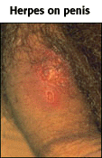

Sexually Transmitted Diseases Problem Set
Problem 4: Increase in Prevalence of Genital Herpes
Help to answer the question| According to the Federal Centers for Disease Control and Prevention report released in October 1997, there was a large increase in the prevalence of genital herpes in the United States between the late 1970s and 1996. They estimate that 1 in how many Americans is infected with genital herpes? |
Tutorial
CDC report|
Genital herpes is mostly caused by herpes simplex virus type 2 and less frequently by the type 1 virus. Herpes simplex virus type 1 is mostly responsible for oral herpes or cold sores.
According to October 1997 report from the Centers for Disease Control (and Prevention (CDC), 1 out of every 5 Americans age 12 or older is infected with the herpes simplex type 2 virus. This amounts to 45 million Americans infected with the disease. In this CDC study, only 9% of the infected participants were aware that they were infected. The large majority of people infected have no symptoms and would never know that they are infected unless they are checked for the virus. |
| Because the virus is transmitted by direct contact, an infected person should avoid having intercourse during the active phase of the infection. Also, an asymptomatic infected person may transmit the disease if a small amount of the virus is present on the skin. Condoms offer a limited protection as the virus may be on parts of the body not covered by a condom. A mother can infect her baby if she has an outbreak at the time of childbirth. |
|
During the recurring active phase of the infection, herpes simplex virus type 2 causes outbreaks of sores and blisters like we see in the illustrations on the right. |
 Used with permission of © Dr. Norm Levine |
|
Or, itching and burning may be experienced on the sex organs, buttocks, or thighs. Other symptoms are flu-like symptoms and pain while urinating. It is during the active phase that an infected person is most contagious. |
Used with permission of © Dr. Norm Levine |
|
Acyclovir capsules or ointments can ease the symptoms and reduce the length of attacks, but, at this time, there is no known cure for herpes. The symptoms may go away within a few weeks, but the virus never goes away. In fact, the virus enters nerve cells where they are protected from the immune system. There they may remain dormant or they may become active again. Outbreaks may recur especially following stress, such as fatigue, inadequate diet, lack of sleep, illness, or surgery or after exposure to the sun.
There are herpes support groups that may help deal with the emotional problems sometimes associated with the disease. |


University of Arizona
Wednesday, September 30, 1998
Contact the Development Team
http://www.biology.arizona.edu
All contents copyright © 1998. All rights reserved.